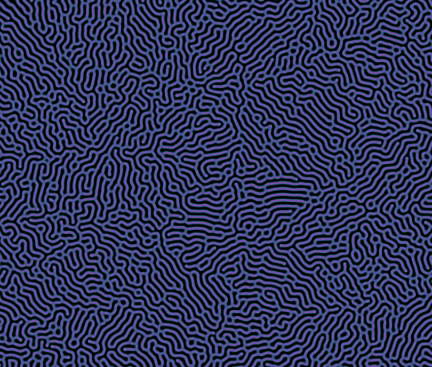

Reaction-Diffusion model simulation
Real-time Gray–Scott reaction–diffusion in OpenGL. CPU finite-difference and GPU fragment-shader ping-pong, built for side-by-side performance comparison.
A simple gallery of projects. Click a card to go to the Github repository of the project. The overview, methods and results of each project can be seen on the Github README.
Real-time Gray–Scott reaction–diffusion in OpenGL. CPU finite-difference and GPU fragment-shader ping-pong, built for side-by-side performance comparison.
Depixelization of pixel art through spring simulation. Implementation of the paper "Interactive Depixelization of Pixel Art through Spring Simulation".
A procedural tree modeling framework using strand-based volumetric geometry. Implementation of the paper "Interactive Invigoration: Volumetric Modeling of Trees with Strands".
Exploring different procedural terrain generation methods and evaluating realism & performance. WORK IN PROGRESS!